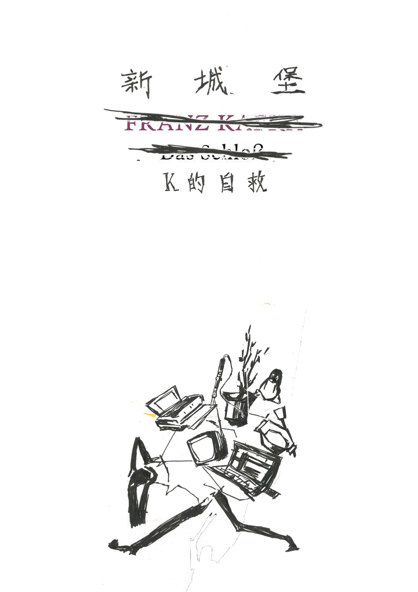

本活动是“新城堡——K的自救”系列的第一场，为该系列探索入侵复杂系统以获取生存资源定下了基调。该系列对卡夫卡小说《城堡》进行虚构化和续写，将政府大楼周围棚户区的地理结构与小说中城堡的位置进行对比。它创造了K闯入一家房地产中介以在庞大系统中找到立足点的事件，以此作为起点，讨论如何利用二手房平台和城市观察方法中的系统漏洞来寻找廉价住房（这也参考了在实施“透明社会”概念期间对南京住房结构和街道特征的观察）。它进一步讨论了蹲居文化的含义及其对生存权的影响。 This event, the first in the series "New Castle - K's Self-Rescue," sets the tone for the series' exploration of hacking into complex systems to obtain survival resources. The series fictionalizes and continues Kafka's novel The Castle, contrasting the geographical structure of the shantytown surrounded by government buildings with the castle's location in the novel. It creates the event of K breaking into a real estate agency to find a foothold in a vast system, using this as a starting point to discuss how to exploit system vulnerabilities in secondhand housing platforms and urban observation methods to find cheap housing (this also references observations of Nanjing's housing structure and street characteristics during the implementation of the "Transparent Society" concept). It further discusses the implications of squatting culture and its impact on the right to survival.